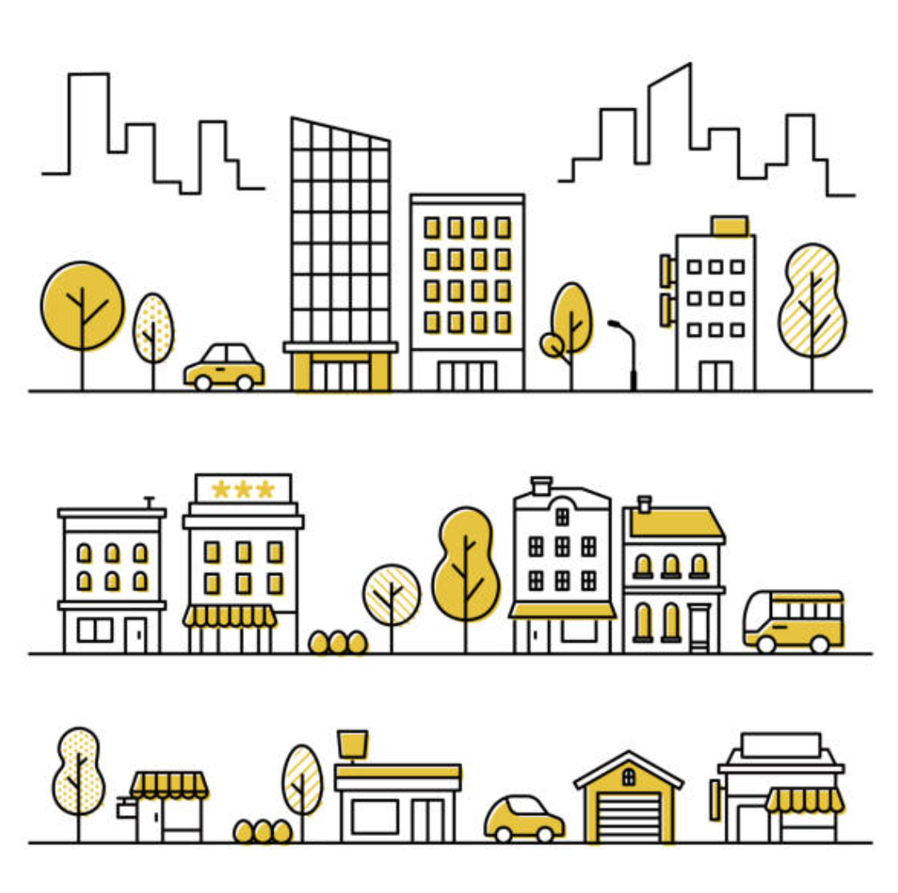

Нарисуем городской пейзаж при помощи Turtle.
При создании рисунков нам часто приходится перемещать черепашку в нужное место, не рисуя при этом линию. Для этого повторяется один и тот же алгоритм:
Чтобы не повторять одни и те же команды снова и снова, можно создать функцию:
def move(x,y):
"""Move turtle without drawing"""
penup()
goto(x,y)
pendown()
Теперь можно перемещать черепашку при помощи одной команды:
move(x,y):
Это не только удобно, но и делает код проще и понятнее.
💡Строка в тройных кавычках называется docstring. Она содержит пояснение к функции, - является частью документации.
В Python можно вызвать функцию help() с именем функции, например: help(print) покажет документацию к
функции print(), а help(move) покажет документацию к нашей функции move(). Выполни эти команды и
посмотри что получится.
Координатная сетка помогает лучше ориентироваться на холсте. Вот как мы можем её создать:
Пример кода:
size = 500
step = 50
size_extra = size + step * 0.5
# draw Ox
width(2)
move(-size_extra, 0)
goto(size_extra, 0)
stamp()
# draw Oy
move(0, -size_extra)
goto(0, size_extra)
setheading(90)
stamp()
# draw other lines
color("blue")
width(1)
for i in range(size // step):
# positive horizontal lines
y = step + i * step
move(-size_extra, y)
goto(size_extra, y)
write(y)
# negative horizontal lines
move(-size_extra, -y)
goto(size_extra, -y)
write(-y)
# positive vertical lines
x = step + i * step
move(x, -size_extra)
goto(x, size_extra)
write(x)
# negative vertical lines
x = step + i * step
move(-x, -size_extra)
goto(-x, size_extra)
write(-x)
Для создания городского пейзажа можно начать с простых зданий, затем добавить детали, такие как окна, крыши и дороги. Вот примерный план действий:
Пример кода для здания:
def house_1():
# initialize variables
x, y = pos()
width = step * 2
height = step * 2.6
window_width = width / 4
window_height = window_width * 0.9
spacing_x = (width - window_width) / 4.5
spacing_y = spacing_x * 0.9
# house box
fillcolor("yellow")
begin_fill()
setheading(90)
box(width, height)
end_fill()
# window 1
penup()
goto(x + spacing_x, y + height - spacing_y)
setheading(0)
fillcolor("white")
begin_fill()
box(window_width, window_height)
end_fill()
# window 2
penup()
goto(x + spacing_x * 2 + window_width, y + height - spacing_y)
setheading(0)
begin_fill()
box(window_width, window_height)
end_fill()
# window 3
penup()
goto(x + spacing_x, y + height - spacing_y * 2 - window_height)
setheading(0)
begin_fill()
box(window_width, window_height)
end_fill()
Вот полный исходный код нашего занятия:
from turtle import *
def move(x,y):
"""Move turtle without drawing"""
penup()
goto(x,y)
pendown()
speed(0)
size = 500
step = 50
size_extra = size + step * 0.5
# draw Ox
width(2)
move(-size_extra, 0)
goto(size_extra, 0)
stamp()
# draw Oy
move(0, -size_extra)
goto(0, size_extra)
setheading(90)
stamp()
# draw other lines
color("blue")
width(1)
for i in range(size // step):
# positive horizontal lines
y = step + i * step
move(-size_extra, y)
goto(size_extra, y)
write(y)
# negative horizontal lines
move(-size_extra, -y)
goto(size_extra, -y)
write(-y)
# positive vertical lines
x = step + i * step
move(x, -size_extra)
goto(x, size_extra)
write(x)
# negative vertical lines
x = step + i * step
move(-x, -size_extra)
goto(-x, size_extra)
write(-x)
done()
Добавим функции для создания других элементов рисунка - дома, деревья, машины, облака, и т.п.
Можем работать командой, а затем объединить различные элементы вместе на одном рисунке.
Нарисуй свои объекты городского пейзажа.
Образцы рисунков можно найти в Интернет. Как составить запрос: